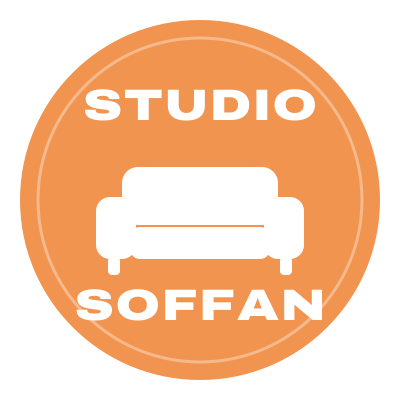

En person. Tjugo motståndare. Ingen gömmer sig.
En känd profil sätter sig mitt i ringen och möter tjugo personer med motsatt åsikt. Det är vårt mest sedda format – med flera avsnitt över 700 000 visningar.


Sex röster. Ett ämne. En soffa.
Ett aktuellt ämne, sex personer från olika läger och en soffa. Här får samtalet ta tid – och det blir ofta hett ändå.


Två personer. Ett bord. Inga mellanhänder.
Två debattörer möts öga mot öga vid samma bord – ministrar, partisekreterare, ungdomsförbund och opinionsbildare.

Makten möter väljarna.
Partiledare möter tjugo väljare som får ställa precis de frågor de vill. Statsminister Ulf Kristersson har suttit i stolen.

Parti mot parti. Två mot två.
Två lag från två partier eller läger möts i en lagdebatt – två mot två.


Valnatten – live.
Vår valvaka sändes live under valet 2026 med debatter, samtal och analys hela kvällen.

När vi lämnar studion.
Underhållning, utmaningar och en dag i någon annans skor.
Formaten i siffror
| Format | Deltagare | Upplägg | Avsnitt | Visningar | Mest sedda |
|---|---|---|---|---|---|
| 1 mot 20 | 1 + 20 | En person. Tjugo motståndare. Ingen gömmer sig. | 11 | 4 013 000 | Jan Emanuel vs 20 miljöpartister |
| Studio Soffan | 6 | Sex röster. Ett ämne. En soffa. | 22 | 2 559 000 | Klimatkrisen är här nu, vad ska vi göra åt det? |
| Duellen | 2 | Två personer. Ett bord. Inga mellanhänder. | 21 | 1 525 000 | Markus Allard vs Martin Melin |
| Partiledare vs 20 väljare | 1 + 20 | Makten möter väljarna. | 3 | 584 000 | Ulf Kristersson vs 20 väljare |
| Panelen | 2 + 2 | Parti mot parti. Två mot två. | 4 | 280 000 | Sverigedemokraterna vs Miljöpartiet |
| Valvakan 2026 | Live | Valnatten – live. | 7 | 318 000 | Valvaka 2026 – hela livesändningen |
| Studio Banditer | Varierar | När vi lämnar studion. | 2 | 166 000 | Lever en dag som Alexander Ernstberger |
Vilket format passar dig?
Sök till en öppen debatt eller anmäl dig till talangbanken.